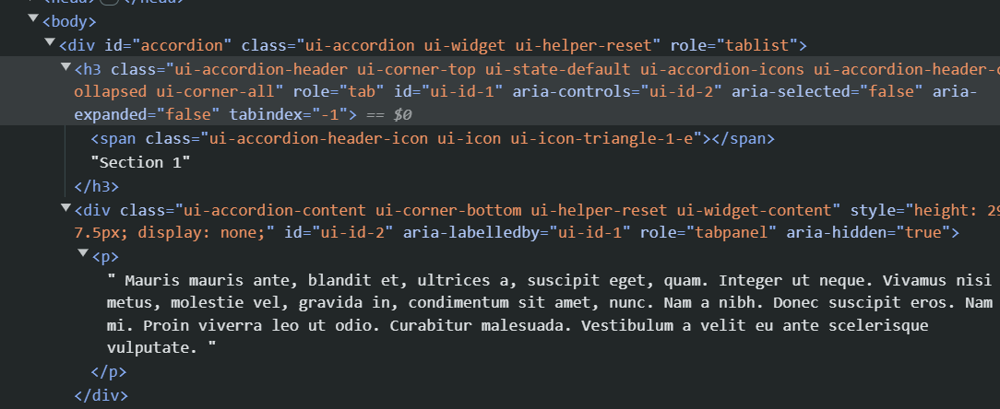

Back
Opdracht 3
Uit welke elementen bestaat elke accordion section in de DOM-tree?

elke section bestaat uit een h3(+span) en dan een, <p> met een groote hoeveelheid attributes
Welke wijzingen gebeuren er in de DOM-tree als je op een gesloten section klikt?
het aria expanded attribute wordt van false naar true gezet.
in de paragraaf worden aantal andere attributen veranderd om het zichtbaar the maken
Je ziet bv. dat er heel wat attributen aan de oorspronkelijke elementen zijn toegevoegd. Hoe zou dit gebeurd zijn?
Via javascript.